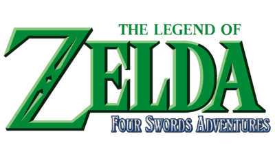

- introduction
- Début de la chronologie
- Branche de Link enfant
- Branche de Link adulte
- Branche du héro déchu
- Breath of the wild et Tears of the kingdom
Branche de Link enfant
Après que Zelda ai raamené Link à son époqie d'origine, la chronologie s'est séparé en 2 lignes temporelles: celle suivant la temporalité de Link redevenu enfant et celle du monde ou il était adulte, maintenant pruvée du héro. Ici, nous observerons celle de Link enfant.
Le premier jeu de cette ligne temporelle est The legend of Zelda Majora's mask (aussi le meilleur). ici, nous suivons le même Link que dans Ocarina of Time! Alors qu'il cherchait son ami Navi la fée à dos de son cheval dans la forêt kokiri, un skull kid (enfant qui s'est perdu dans la forêt et qui s'est transformé en monstre de la forêt) portant un un masque étrange lui vole son cheval et son ocarina et s'enfuit. Tentant de l'attraper, notre héros tombe dans un trou et fais une chute digne d'Alice aux pays des merveilles. C'est alors qu'il se retrouve dans Termina, un monde parallèle au sien ou tout semble à la fois familier et différent. Là-bas, il découvre que skull-kid est manipulé ar le masque de majora, le poussant à commettre des actions terrible COMME PAR EXEMPLE faire s'écraser la lune sur Termina!!! Heureusement, grâce à son ocarina du temps, Link arrive à remonter dans le temps 4 jours avant le désastre. Il doit alors chercher l'aide des 4 géants protecteurs de Termina afin de stopper cette tragédie.
The Legend of Zelda: Twilight Princess suit Link, un jeune homme vivant dans le village d'Ordon, qui se retrouve plongé dans une aventure épique pour sauver Hyrule. L'histoire commence lorsque Link est entraîné dans un monde de ténèbres après que le royaume soit envahi par une force maléfique, le Crépuscule, dirigée par Zant. Transformé en loup et aidé par une mystérieuse créature nommée Midna, Link doit explorer des régions variées d'Hyrule pour restaurer la lumière et libérer le royaume de l'emprise de Zant et de Ganondorf. Tout au long de son voyage, Link découvre des donjons, résout des énigmes et rencontre divers personnages emblématiques. Avec une ambiance sombre et des graphismes immersifs, Twilight Princess offre une histoire profonde sur la lutte entre la lumière et les ténèbres, tout en développant des thèmes de sacrifice et d'amitié. Link doit finalement affronter Zant et Ganondorf pour rétablir la paix, consolidant ainsi son statut de héros légendaire.
Mais pourquoi le remake d'un jeu se retrouve plus tard dans la chronologie ?? J'en sais rien me posez pas la question